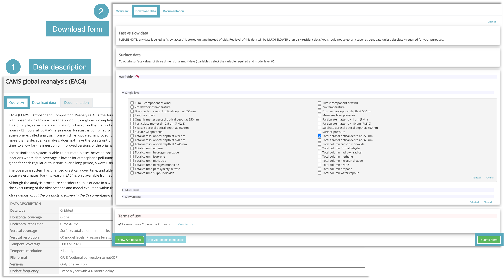

Atmosphere Data Store (ADS) Tutorial
Contents

|
|
|

Atmosphere Data Store (ADS) Tutorial¶
This notebook provides you an introduction to the Copernicus Atmosphere Data Store (ADS) and gives you a practical example how to access and retrieve data from the ADS.
Outline¶
1 - About
2 - CAMS data retrieval
2.1 - Access data interactively via the ADS web interface
2.2 - Access data programmatically with the CDS API
2.3 - Further resources
3 - Example: CAMS data request
1. About¶
The Copernicus Atmosphere Data Store (ADS) is the data access portal of the Copernicus Atmosphere Monitoring Service (CAMS) and offers access to data about the Earth's past, present and future atmosphere. Find more information in the Atmosphere Data Store (ADS) documentation.

2. Data retrieval¶
There are two ways to access data from the Copernicus Atmosphere Data Store (ADS):
interactively via the ADS web interface, or
programmatically with the CDS API
In order to be able to access data from the Atmosphere Data Store (ADS), you first have to self-register at the ADS registration page (if you do not have an account yet) and second, you have to login to the ADS portal. You will be able to browse the ADS web interface without beging logged in, but you have to login for being able to download data.
2.1 Access data interactively via the ADS web interface¶
The ADS web interface allows you to interactively browse, select and download data products offered by the ADS. First, under Datasets, you can browse and select the data you are interested in. In a second step, you can specify details of the data download form you wish to submit.
Filter and select a dataset¶
In a first step, you can browse and filter the datasets you are interested in. The Datasets interface allows you either to select data based on different categories, e.g. Product type, Variable domain, Spatial / Temporal coverage, but also offers a free text search. The list of datasets in the main window allows you to select the dataset you are interested in.

Once you selected a dataset, you then get redirected to a data description section, which provides you an overview of the chosen dataset. Under Download data, you have the option to specify the dataset you would like to download and to submit the download form.
Submit the Download data form¶
The Data description section (see 1 in the image below) provides you an overview of the dataset, including a list of variables that are available. Under the tab Download data, the "Download data" form opens (see 2), which allows you to interactively filter the dataset based on specific keywords, such as:
Product typeVariableYear / Month / TimeGeographical areaFormat
At the end of the "Download data" form, you get two options to select: Show API request and Submit Form. If you want to download the data interactively, the data requests will be executed as soon as you click on the Submit Form button.
Note: You need to be logged into the ADS portal and you have to accept the Terms and Conditions of the dataset before being able to download data.
You will need the Show API request, if you want to request data programmatically. See Section 2.2 for further information.
Under the tab
Your requests in the main menu, you can monitor the status of your data requests.
2.2 Access data programmatically with the CDS API¶
The CDS Application Program Interface (CDS API) is a Python library which allows you to access data from the ADS programmatically. The library is available for both Python versions, Python 2.7.x and Python 3, but we recommend to use the library under Python 3. In order to use the CDS API, follow the steps below:
Install the CDS API key¶
Self-register at the ADS registration page (if you do not have an account yet)
Login to the ADS portal and go to the api-how-to page
Copy the CDS API key displayed in the black terminal window in a file under
$HOME/.cdsapirc
Note: You find your CDS API key displayed in the black terminal box under the section Install the CDS API key. If you do not see a URL or key appear in the black terminal box, please refresh your browser tab.

The code below creates the file under your current working directory. Make sure to replace the ################ with your personal CDS API key.
%%writefile ./.adsapirc
url: https://ads.atmosphere.copernicus.eu/api/v2
key: ################################
The Copernicus Climate Change Service (C3S) uses the same CDS API software, but provides access to different datasets. If you are accessing data also from the Copernicus Climate Data Store and you already have a
~/.cdsapirc file created, then you have to store your ADS key elsewhere. You can e.g. store your ADS key under
./.adsapirc and you can pass the key information to the client library explicitly. See the code cell below how to do this. import cdsapi
import yaml
with open ('./.adsapirc', 'r') as f:
credentials= yaml.safe_load(f)
c = cdsapi.Client(url=credentials['url'], key=credentials['key'])
Alternative: Set CDS API credentials manually¶
Alternatively, you can also define variables for url and key. These variables can then be set when you define the cdsapi.Client(url=URL, key=KEY) (see next section for the different components of a data retrieval request).
Please note: in the workflow notebooks, we will use this modality and set manually the CDS API key information for the data retrievals.
URL = 'https://ads.atmosphere.copernicus.eu/api/v2'
KEY = '############################'
Install the CDS API client¶
The next step is to install the CDS API client. You can do this with the package management system pip.
!pip install cdsapi
Use the CDS API client for data access¶
Once the CDS API is installed, it can be used to request data from the Atmosphere Data Store.
Below, you see the principle of a data retrieval request. You always have to make sure to first import the cdsapi and define a cdsapi.Client() before you are able to execute an API request. You can use the web interface to browse through the datasets. At the end of the Download form, there is the option to choose Show API request. If you click this button, the API request appears (see example below), which you can copy paste into your coding workflow.
Please note: you have to accept the Terms and Conditions of the dataset through the ADS web interface before you are able to request data via the CDS API.

For data originating from ECMWF's Meteorological and Archival System (MARS), data is stored on a grid with longitudes from 0 to 360 degrees. It can be reprojected to a regular geographic latitude-longitude grid, by setting the keyword argument
area and grid. Per default, data is retrieved in GRIB. If you wish to retrieve the data in netCDF, you have to specify it by using the keyword argument format.2.3 Further resources¶
3. Example: CAMS data request¶
Example: CAMS global atmospheric composition forecasts - Organic matter aerosol optical depth at 550 nm¶
Data used in Fire Monitoring case study
CDS API name: cams-global-atmospheric-composition-forecasts
Variable:
organic_matter_aerosol_optical_depth_550nmDate:
2021-08-01/2021-08-08Time:
00:00Leadtime hour:
[0, 6, 12, 18, 24, 30, 36, 42, 48]Type:
forecastArea:
[80, -150, 25, -50]Format:
netcdf_zip
import cdsapi
c = cdsapi.Client(url=URL, key=KEY)
c.retrieve(
'cams-global-atmospheric-composition-forecasts',
{
'date': '2021-08-01/2021-08-08',
'type': 'forecast',
'format': 'netcdf_zip',
'variable': 'organic_matter_aerosol_optical_depth_550nm',
'time': '00:00',
'leadtime_hour': [
'0', '12', '18',
'6',
],
'area': [
80, -150, 25,
-50,
],
},
'./2021-08_NAmerica_organicMatterAOD.zip')
This project is licensed under APACHE License 2.0. | View on GitHub